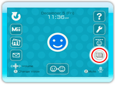
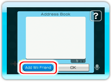

Register the friends you want to chat with as your Wii Friends. Select
to display your 16-digit Wii number, exchange Wii numbers with your friends, and then register them as Wii Friends.

In the chat room or lobby, choose
to open your address book.
On the Wii Speak Channel, you can chat with anyone registered as your Wii Friend on the Wii Message Board.
The address books of Wii Friends registered on the Wii Message Board will appear in your Wii Speak Channel’s address book. However,
Wii Friends who have been registered as e-mail addresses will not display.
When the channel is first launched, users must agree to this statement: "When you use the Wii Speak Channel, your Wii Friends will see whether you have a Wii Speak mic,
whether you're using the Wii Speak Channel, as well as some information about whom you're talking to."
You can use either the address book in the Wii Speak Channel or on the Wii Message Board to add new Wii Friends.

Choose Add Wii Friend and follow the directions on the screen by entering the person’s Wii number and a nickname.
When finished entering the necessary information, place a
in the
next to your Wii Friend’s nickname by pointing at the box to the left of his or her name and pressing
.
The status of checked Wii Friends will be displayed in the Lobby. Up to 10 Wii Friends can be checked.
The Wii Friends you’ve checked will be able to see if you’re online and to see some information about whom you’re chatting with.
If you use the Wii Speak Channel even once, a
will appear in the
next to your name for other users.
To stop someone from being displayed in the lobby, please uncheck the
or
next to their name by pointing at it and pressing
.
After you have registered each other, the color of your Wii Friend’s name will change.

 .
The status of checked Wii Friends will be displayed in the Lobby. Up to 10 Wii Friends can be checked.
.
The status of checked Wii Friends will be displayed in the Lobby. Up to 10 Wii Friends can be checked.